Gaussian Distributions
Fundamental to understanding a Gaussian process is a Gaussian distribution.The 1 dimensional version of the Gaussian distribution is the Normal distribution or the Bell Curve.
The plot of a standard normal distribution with mean 0 and variance 1 is shown below. Note that the curve doesn’t look like a perfect bell as the data has been simulated
set.seed(0)
plot(density(rnorm(100000)),main = bquote("N("~mu~"=0,"~sigma^2~"=1)"))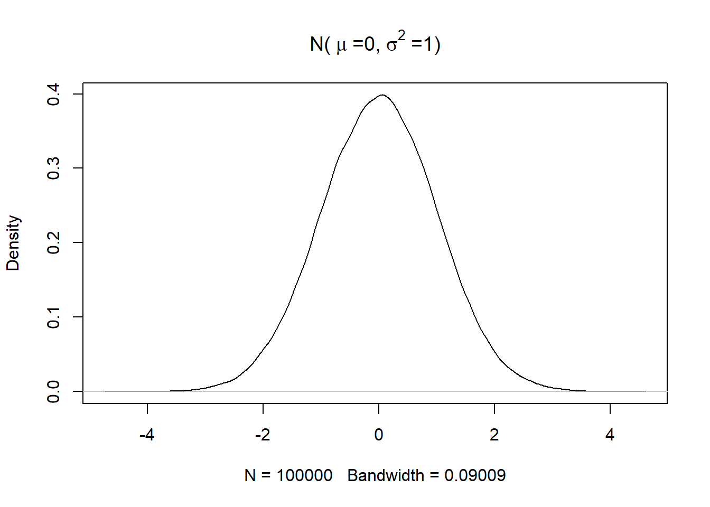
A bi-variate Gaussian distribution is simply a Gaussian distribution in 2 dimensions. Whereas a uni-variate Gaussian distribution is parameterized by two scalar quantities (i.e. the mean and variance),the bi-variate Gaussian distribution and its higher dimensional counterparts are parameterized by a vector( the mean) and a matrix (the covariance matrix)
\[ \begin{bmatrix} x_1 \\\\ x_2 \end{bmatrix} = N\Big( \begin{bmatrix} \mu_1 \\\\ \mu_2 \end{bmatrix},\begin{bmatrix} \Sigma_{11} & \Sigma_{12} \\\\ \Sigma_{21} & \Sigma_{22} \end{bmatrix} \Big) \]
A bi-variate Gaussian can be represented using a simple scatter plot as shown below.
library(ggplot2)
df = data.frame(x= rnorm(10000),y =rnorm(10000))
ggplot(df,aes(x=x,y=y)) + geom_point()+geom_density_2d()+labs(x='x1',y='x2')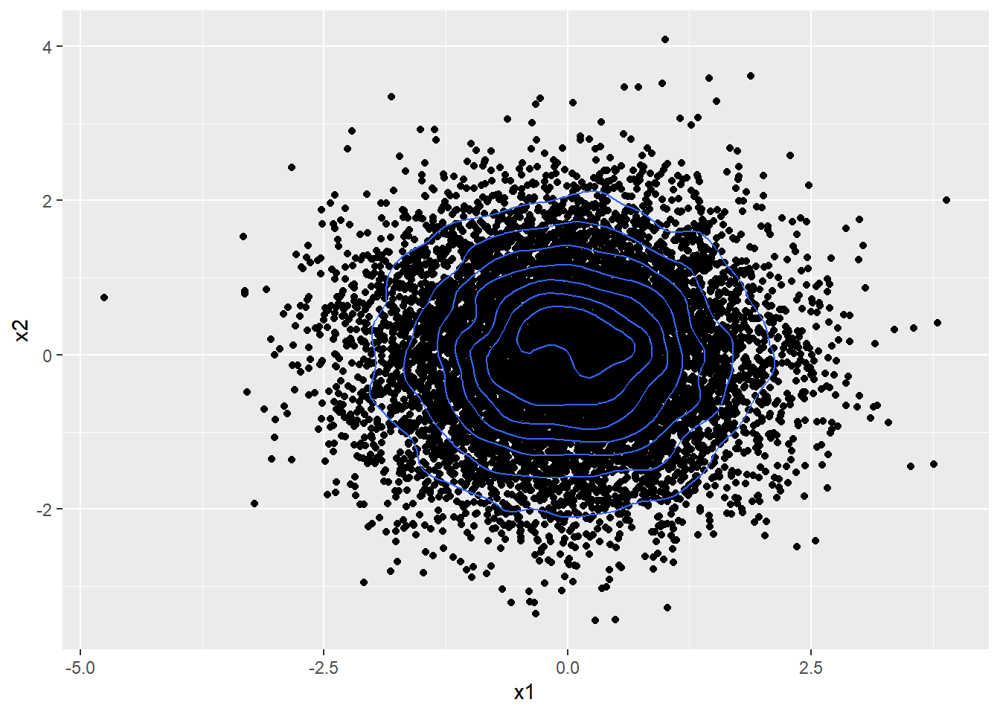
Note that the bi-variate Gaussian above is constructed using two independent 1D Gaussians, meaning the two variables being plotted here are independent i.e. information about one doesn’t tell us anything about the other. This is further evidenced by the circular, symmetrical distribution of the points.
Such a standard normal bi-variate Gaussian has mean \(\mu = \begin{bmatrix} 0 \\\\ 0 \end{bmatrix}\) and a covariance matrix \(\begin{bmatrix} 1 & 0 \\\\ 0 & 1 \end{bmatrix}\)
Note the off-diagonal elements of the covariance matrix are 0.
The plot below shows a bi-variate Gaussian with \(\mu = \begin{bmatrix} 0 \\\\ 0 \end{bmatrix}\) and a covariance matrix \(\begin{bmatrix} 1 & 0.7 \\\\ 0.7 & 1 \end{bmatrix}\).
library(mvtnorm)
gaussian_2d <- data.frame(rmvnorm(10000,mean= c(0,0),sigma = matrix(c(1,0.7,0.7,1),ncol=2)))
ggplot(gaussian_2d,aes(x=X1,y=X2)) + geom_point()+geom_density_2d() 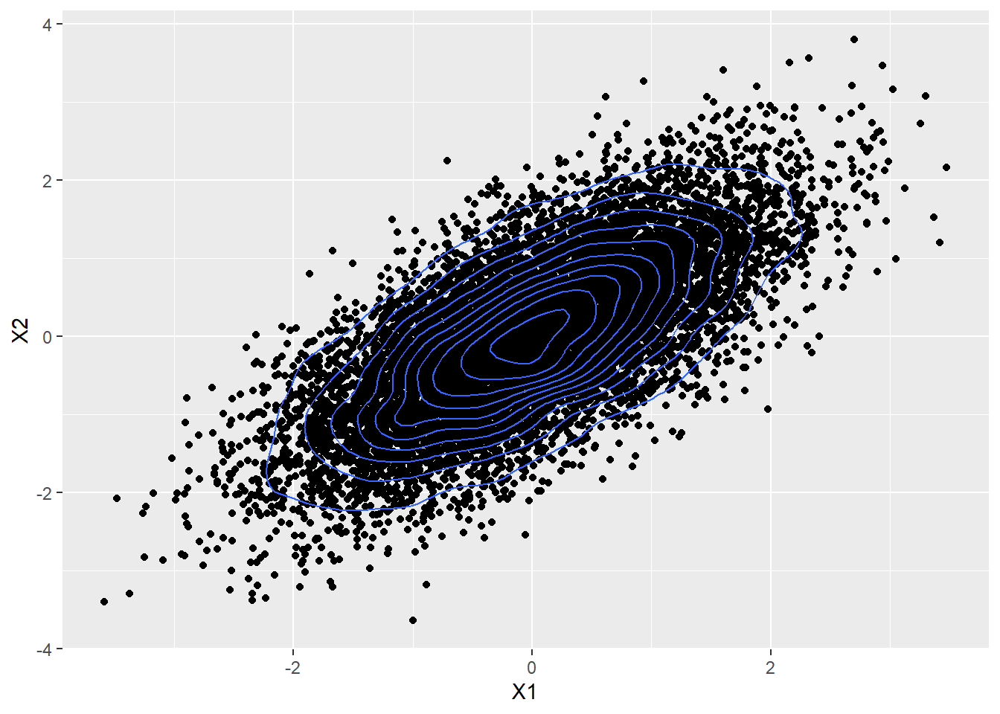
Here the two random variables are positively correlated and are not independent,because if one is positive, we know that the second is also far more likely to be positive rather than negative
Similarly,the plot below shows a bi-variate Gaussian with \(\mu = \begin{bmatrix} 0 \\\\ 0 \end{bmatrix}\) and a covariance matrix \(\begin{bmatrix} 1 & -0.7 \\\\ -0.7 & 1 \end{bmatrix}\)
gaussian_2d <- data.frame(rmvnorm(10000,mean= c(0,0),sigma = matrix(c(1,-0.7,-0.7,1),ncol=2)))
ggplot(gaussian_2d,aes(x=X1,y=X2)) + geom_point()+geom_density_2d() 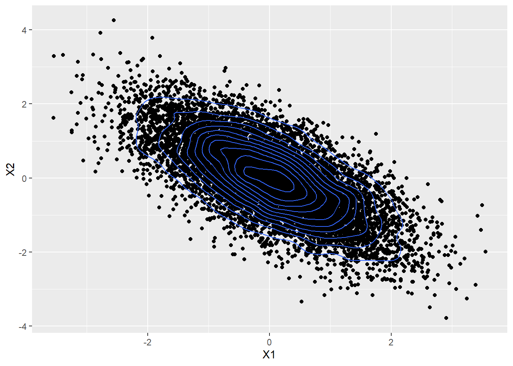
Here the two variables are negatively correlated.
Now consider a different visualization of the same data in the figure above.Only 10 of the 10,000 points plotted above is visualized here.
library(gganimate)
library(tidyr)
library(dplyr)
library(magrittr)
#Select top 10 rows for visualization
viz_data <- head(gaussian_2d,10)
viz_data$set <- as.integer(c(1:10))
#Convert to long format
viz_data_long <- gather(viz_data,key='datapoint',value='y',-set) %>% arrange(set) %>%
select(-datapoint) %>%
mutate(x = rep(c(1,2),length(unique(viz_data$set)))) %>%
select(set,x,y)ggplot(viz_data_long,aes(x=x,y=y,group=set)) + geom_point() +
geom_line(col='cornflowerblue')+ transition_time(set)## Warning: No renderer available. Please install the gifski, av, or magick package
## to create animated output## NULLThe 2D Gaussian distribution can be used to model a line between two given points. A Gaussian distribution with N dimensions can be used to model a line through N different points as shown below.
A 10 D Gaussian with a covariance matrix shown below can be constructed.
N <- 10 # dimension of required cov matrix
cov_mat <- diag(N)
vec <- seq(1,0.1,by = -1/N)[2:N]
for(i in 1:(N-1)){
cov_mat[i,(i+1):N] <- cov_mat[(i+1):N,i] <- vec[1:(N-i)]
}
rownames(cov_mat) <- colnames(cov_mat)<- paste0('X',c(1:10))
print(cov_mat)## X1 X2 X3 X4 X5 X6 X7 X8 X9 X10
## X1 1.0 0.9 0.8 0.7 0.6 0.5 0.4 0.3 0.2 0.1
## X2 0.9 1.0 0.9 0.8 0.7 0.6 0.5 0.4 0.3 0.2
## X3 0.8 0.9 1.0 0.9 0.8 0.7 0.6 0.5 0.4 0.3
## X4 0.7 0.8 0.9 1.0 0.9 0.8 0.7 0.6 0.5 0.4
## X5 0.6 0.7 0.8 0.9 1.0 0.9 0.8 0.7 0.6 0.5
## X6 0.5 0.6 0.7 0.8 0.9 1.0 0.9 0.8 0.7 0.6
## X7 0.4 0.5 0.6 0.7 0.8 0.9 1.0 0.9 0.8 0.7
## X8 0.3 0.4 0.5 0.6 0.7 0.8 0.9 1.0 0.9 0.8
## X9 0.2 0.3 0.4 0.5 0.6 0.7 0.8 0.9 1.0 0.9
## X10 0.1 0.2 0.3 0.4 0.5 0.6 0.7 0.8 0.9 1.0The plot below shows a gaussian distribution in 10 dimensions, which can potentially be used to model a line passing through 10 points.
ggplot(viz_data_long,aes(x=x,y=y,group=set)) + geom_point() +
geom_line(col='cornflowerblue')+ transition_time(set)## Warning: No renderer available. Please install the gifski, av, or magick package
## to create animated output## NULLThis should give you the intuition that using an N - dimensional Gaussian can be used to model a line through N number of points and an infinite dimensional Gaussian can model a continuous curve. This leads to the idea for Gaussian process regression.
Also compare the covariance between any two points in the covariance matrix above and how it manifests in the graph. X1 and X2 have a high covariance, hence the points at 1 and 2 on the x-axis are close to each other along the y-axis. X1 and X10 on the other hand have a low covariance,hence the points 1 and 10 on the x-axis can vary widely.
Conversely if two points lie close to each other on the y-axis, they are likely to have a high covariance whereas if 2 points lie far apart from each other on the y-axis, they are likely to have a low covariance.
Marginal Distributions and Conditional Distributions
Given a jointly Gaussian distribution
\[ \begin{bmatrix} x_1 \\\\ x_2 \end{bmatrix} = N\Big( \begin{bmatrix} \mu_1 \\\\ \mu_2 \end{bmatrix},\begin{bmatrix} \Sigma_{11} & \Sigma_{12}\\\\ \Sigma_{21} & \Sigma_{22} \end{bmatrix} \Big) \]
according to the Multivariate Gaussian Theorem, the marginal distributions of the two component variables are given by.
\[ p(x_1) = N (x_1 | \mu_1.\Sigma_{12}) \]
\[ p(x_2) = N (x_2 | \mu_2.\Sigma_{22}) \]
The conditional posterior distribution is given by:
\[ p(x_2|x_1) = N (x_2 | \mu_{2|1},\Sigma_{2|1}) \] where:
\[ \mu_{2|1} = \mu_2 + \Sigma_{21}\Sigma_{11}^{-1} (x_1 - \mu_1) \]
and
\[ \Sigma_{2|1} = \Sigma_{22} - \Sigma_{21}\Sigma_{11}^{-1}\Sigma_{12} \]
These expression are critical to do inference with Gaussian Process Regression.
Gaussian Process Regression.
Consider three points shown below which you want to model using a Gaussian distribution.
plot(data.frame(x = c(1,1.5,3) , f = c(0.2,0.25,0.8)),xlim=c(0,5),ylim = c(0,1),pch=16)
text(x=c(1,1.5,3),y = c(0.25,0.3,0.85),labels=c('(x1,f1)','(x2,f2)','(x3,f3)'))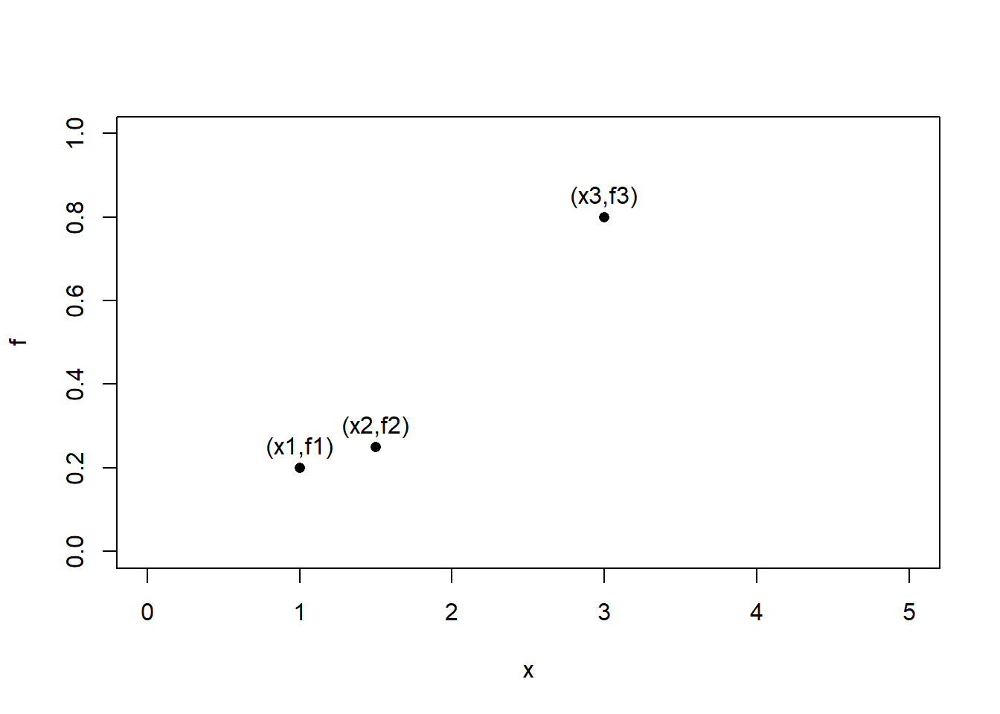
The three points above can be modeled using a Gaussian distribution of the form below. Note that a zero vector can be used for the mean after standardizing the data.
\[ \begin{bmatrix} f_1 \\\\ f_2 \\\\ f_3 \end{bmatrix} = N\Bigg( \begin{bmatrix} 0 \\\\ 0 \\\\ 0 \end{bmatrix},\begin{bmatrix} K_{11} & K_{12} & K_{13} \\\\ K_{21} & K_{22} & K_{23} \\\\ K_{31} & K_{32} & K_{33} \end{bmatrix} \Bigg) = N(\textbf{0},\textbf{K}) \]
To model these data points using a Gaussian distribution , we need to construct a covariance matrix such that the terms \(K_{ij}\) captures the similarity or covariance between points i and j.
The similarity between two points can be captured using kernel functions.Consider a squared exponential kernel(also referred to as a radial basis function kernel) that captures the similarity between two points \(X_i\) and \(X_j\)
\[ K_{ij} = e^{ -\sigma || X_i - X_j ||^2} \]
\[ K_{ij} = \begin{cases} 0, \text{if}\ ||X_i -X_j|| \to \infty \\ 1, \text{if}\ X_i = X_j \end{cases} \]
The covariance matrix for the three points can be calculated as shown below
library(kernlab)
rbfkernel <- rbfdot(sigma = 0.1) # Set value of hyperparameter
point1 <- c(1)
point2 <- c(1.5)
point3 <- c(3)
K12 <- K21 <- rbfkernel(point1,point2)
K23 <- K32 <- rbfkernel(point2,point3)
K13 <- K31 <-rbfkernel(point1,point3)
K11 <- rbfkernel(point1,point1)
K22 <- rbfkernel(point2,point2)
K33 <- rbfkernel(point3,point3)
K <- matrix(c(K11,K12,K13,K21,K22,K23,K31,K32,K33),byrow=TRUE,nr=3)
print(K)## [,1] [,2] [,3]
## [1,] 1.0000000 0.9753099 0.6703200
## [2,] 0.9753099 1.0000000 0.7985162
## [3,] 0.6703200 0.7985162 1.0000000Now that we have learned a model to fit the three points, we want to predict the value of a fourth point \(x^*\), the predicted value for this point \(f^*\) can lie anywhere along the red vertical lines.
plot(data.frame(x = c(1,1.5,3) , f = c(0.2,0.25,0.8)),xlim=c(0,5),ylim = c(0,1),pch=16)
abline(v= 2.5,col='red')
text(x=c(1,1.5,3,2.15),y = c(0.25,0.3,0.85,0.5),labels=c('(x1,f1)','(x2,f2)','(x3,f3)','(x*=2.5,f*)'))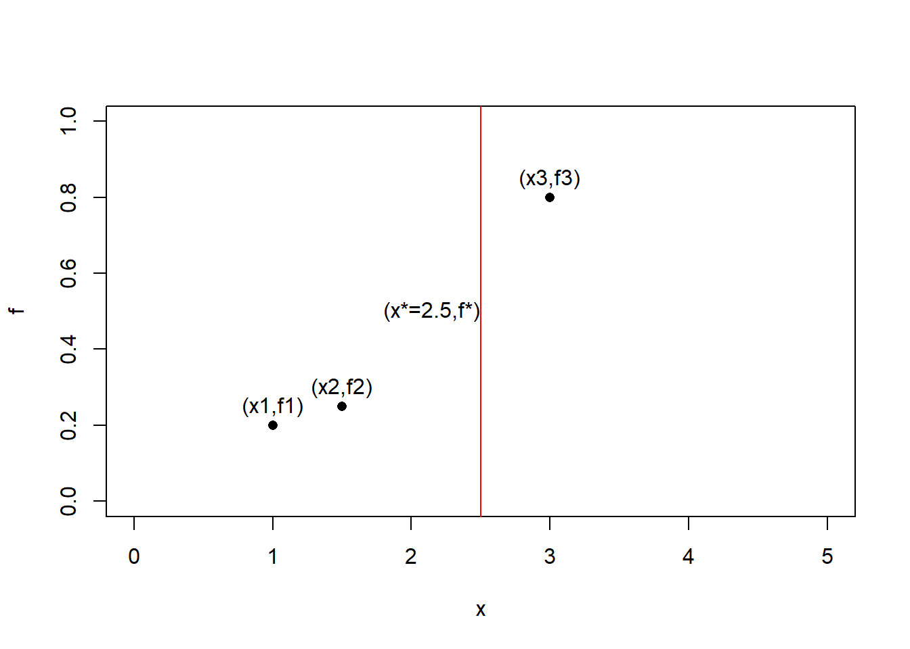
In order to capture the relationship between the four points, the four points can be modeled as a 4D Gaussian defined as follows:
\[ \begin{bmatrix} \textbf{f} \\\\ f^* \end{bmatrix} = N\Bigg( \begin{bmatrix} \textbf{0} \\\\ 0 \end{bmatrix},\begin{bmatrix} \textbf{K} & \textbf{K}_* \\\\ \textbf{K}_*^T & K_{**} \end{bmatrix} \Bigg) \]
where:
\[ \textbf{f} = \begin{bmatrix} f_1 \\\\ f_2 \\\\ f_3 \end{bmatrix} \] \[ \textbf{0} = \begin{bmatrix} 0 \\\\ 0 \\\\ 0 \end{bmatrix} \] \[ \textbf{K} =\begin{bmatrix} K_{11} & K_{12} & K_{13} \\\\ K_{21} & K_{22} & K_{23} \\\\ K_{31} & K_{32} & K_{33} \end{bmatrix} \] \[ \textbf{K}_* = \begin{bmatrix} K_{1*} \\\\ K_{2*} \\\\ K_{3*} \end{bmatrix} \]
This is a joint distribution over \(\textbf{f}\) and \(f^*\). Given \(\textbf{f}\) which we already know from the three available data points, we can use the Multivariate Gaussian Theorem to estimate the distribution over \(f_*\). The mean and variance of this distribution is given by:
\[ \mu^* = \textbf{K}_*^{T}\textbf{K}^{-1}f \]
\[ \sigma^* = K_{**} - \textbf{K}_*^{T} \textbf{K}^{-1} \textbf{K}_* \]
We can get mean and variance of the distribution over the unknown value at x = 2.5 as follows
f <- c(0.2,0.25,0.8)
point_star <- c(2.5)
K1star <- Kstar1 <- rbfkernel(point1,point_star)
K2star <- Kstar2 <- rbfkernel(point2,point_star)
K3star <- Kstar3 <-rbfkernel(point3,point_star)
Kstarstar <- rbfkernel(point_star,point_star)
Kstar = c(K1star,K2star,K3star)
Kstar_t = t(Kstar)
K_inv = solve(K)
##The mean##
mu_star = Kstar_t%*%K_inv%*%f
##The standard deviation##
sigma_star = sqrt(Kstarstar - Kstar_t%*%K_inv%*%Kstar)
print(paste0('Mean of f* = ',mu_star))## [1] "Mean of f* = 0.575736376567534"print(paste0('Standard deviation of f* = ',sigma_star))## [1] "Standard deviation of f* = 0.0264409370474204"The prediction is shown below in green using an error bar.
plot(data.frame(x = c(1,1.5,3,point_star) , f = c(0.2,0.25,0.8,mu_star)),xlim=c(0,5),ylim = c(0,1),pch=16, col = c(rep('black',3),'green'))
arrows(point_star,mu_star - 1.96*sigma_star,point_star,mu_star + 1.96*sigma_star,length = 0.05,angle=90,
code=3,col='green')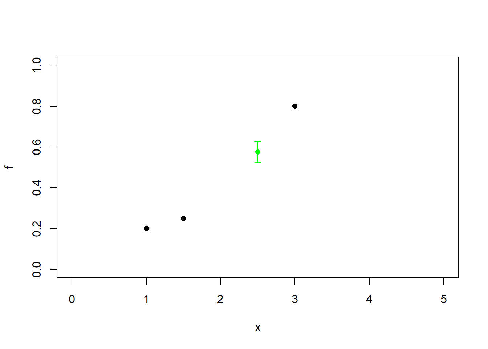
Similarly the prediction of any point along the x-axis can be found. Below the predictions for a sequence of points along the x-axis have been generated and plotted along with the their 95% confidence intervals.
For any input value, the Gaussian process model gives us a mean and a variance for the prediction.It is in effect a function.
predict <- function(input){
point_star <- input
K1star <- Kstar1 <- rbfkernel(point1,point_star)
K2star <- Kstar2 <- rbfkernel(point2,point_star)
K3star <- Kstar3 <-rbfkernel(point3,point_star)
Kstarstar <- rbfkernel(point_star,point_star)
Kstar = c(K1star,K2star,K3star)
Kstar_t = t(Kstar)
K_inv = solve(K)
##The mean##
mu_star = Kstar_t%*%K_inv%*%f
##The standard deviation##
sigma_star = tryCatch(sqrt(Kstarstar - Kstar_t%*%K_inv%*%Kstar),
warning = function(e){0})
return(c(mu_star,sigma_star))
}
##Vector of points to generate predictions on
x <- seq(0,5,by=0.1)
predictions <- sapply(x,predict)
mean <- predictions[1,]
#lower bound
lb <- predictions[1,] - 1.96*predictions[2,]
#upper bound
ub <-predictions[1,] + 1.96*predictions[2,]
#Bind together in a dataframe
preds <- data.frame(cbind(x,mean,lb,ub))
#Inputs
inputs <- data.frame(x=c(point1,point2,point3),f=f)
ggplot(preds,aes(x=x,y=mean)) +
geom_ribbon(aes(x=x,ymin=lb,ymax=ub),fill='grey70')+
geom_line(col='green')+
geom_point(data=inputs,mapping=aes(x=x,y=f))+labs(y='y')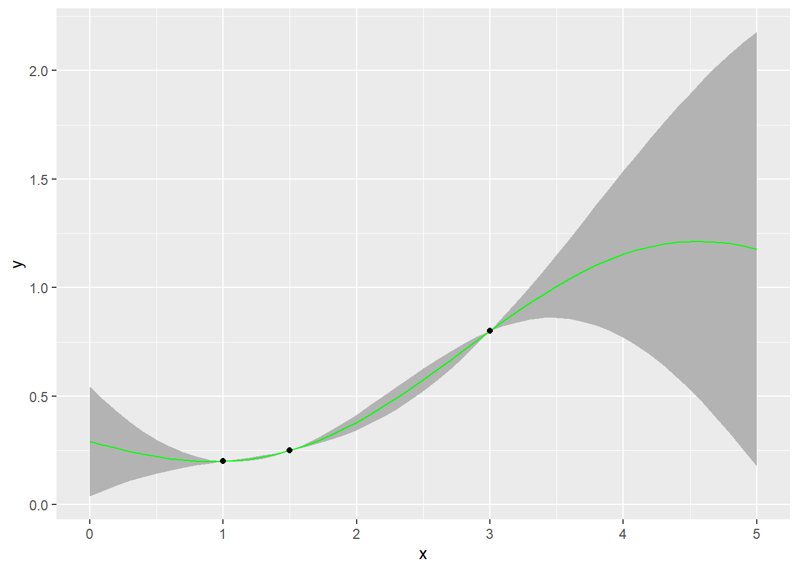
We can clearly see that the uncertainty near the training data points is low, as we move away from the training data points, the level of uncertainty increases. This aligns very well with our intuition.
Gaussian Processes
The Gaussian process is thus the generalization of a multi-variate normal distribution to infinitely many variables.It can be thought of as a Gaussian distribution over functions( thinking of functions as infinitely long vectors containing the value of the function at every input)
The choice of a kernel function encodes a prior belief that the data points that lie close to each other should result in similar function outputs.The value of the hyper parameter sigma encodes how smooth the functions are.
Consider a sequence of test points from -5 to 5. The GP prior, or the distribution over the possible space of functions when no training data is available is as follows. Only three functions have been sampled here.
x_vec <- seq(-5,5,by=0.1)
rbfkernel <- rbfdot(sigma = 1) # Set value of hyperparameter
cov_mat <- kernelMatrix(rbfkernel,x_vec,x_vec)
gp_prior <- data.frame(t(rmvnorm(5,mean= rep(0,length(x_vec)),sigma = cov_mat)))
matplot(x=x_vec,y = gp_prior,lty=1,type='l',xlab ='x',ylab = 'y',col=c(1:10))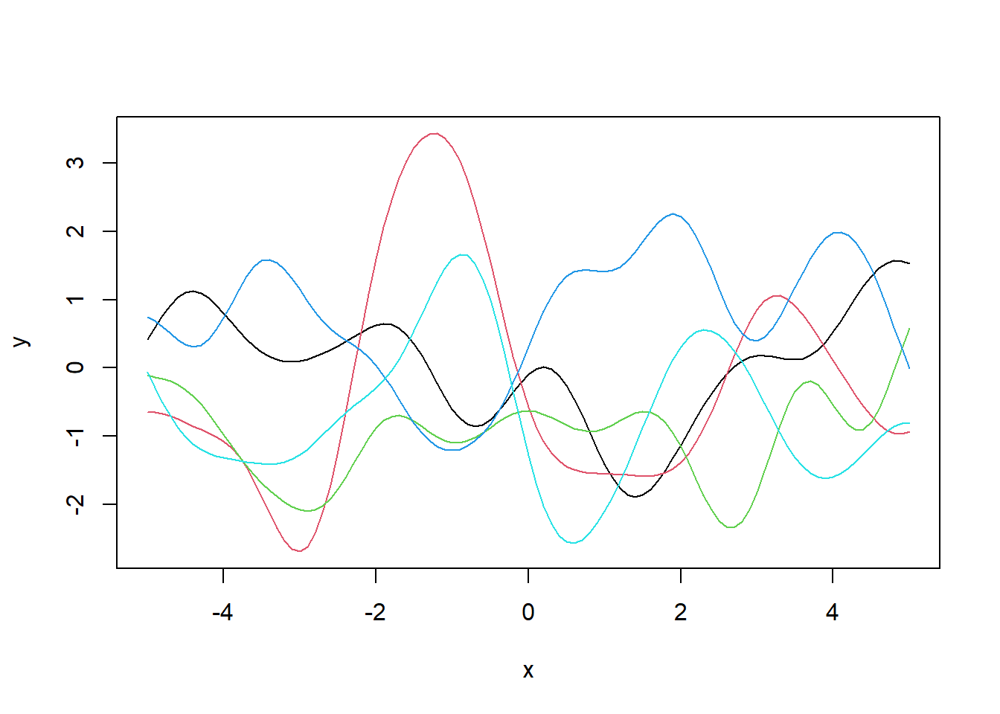
Assume the data generating process is a sine function, and the value of the sine function at three points 1,1.5 and 3 were observed as shown below.
plot(x=x_vec,y=sin(x_vec),type='l',xlab='x',ylab='y')
points(x=c(0.5,2,3),y=sin(c(0.5,2,3)),pch =16)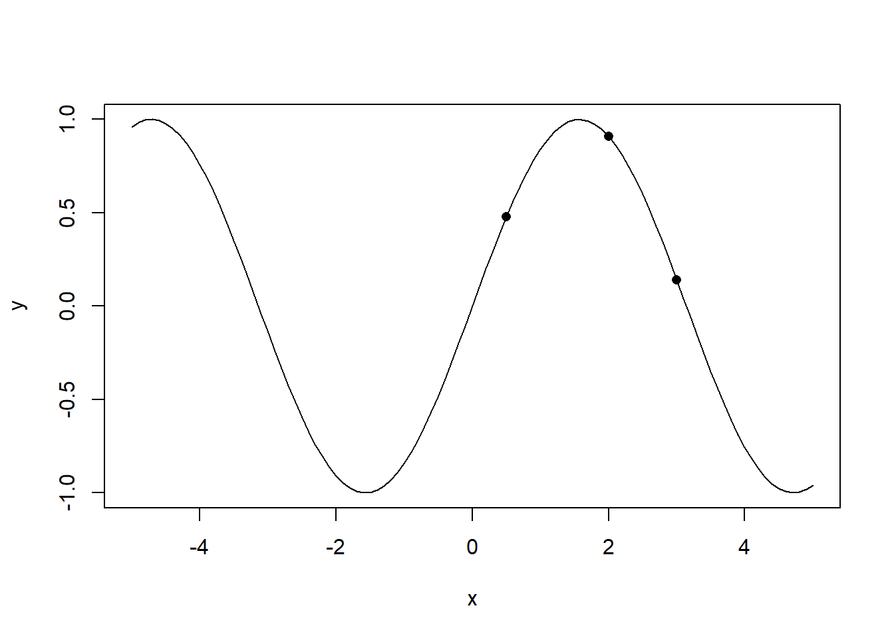
train_x <- c(0.5,2,3)
test_x <- x_vec
f <- sin(train_x)
K <- kernelMatrix(rbfkernel,train_x,train_x)
K_star <- kernelMatrix(rbfkernel,train_x,test_x)
K_starstar <- kernelMatrix(rbfkernel,test_x,test_x)
K_inv <- solve(K)The mean and variance of the test points are calculated as follows. Note that there are more efficient ways of doing the linear algebra calculations shown below, specifically be reducing the matrix inverse to linear system of equations. References for doing this have been provided in the appendix.
mu_star <- t(K_star)%*%K_inv%*%f
Sigma_star <- K_starstar - t(K_star)%*%K_inv%*%K_starSampling from this GP posterior produces the following posterior distribution of functions.
gp_posterior <- data.frame(t(rmvnorm(5,mean= rep(0,length(mu_star)),sigma = Sigma_star)) + as.vector(mu_star))
matplot(x=test_x,y = gp_posterior,lty=1,type='l',xlab ='x',ylab = 'y',col=c(1:10))
lines(x=x_vec,y=sin(x_vec),lty=2,lwd=2)
points(x=train_x,y=f,pch=16)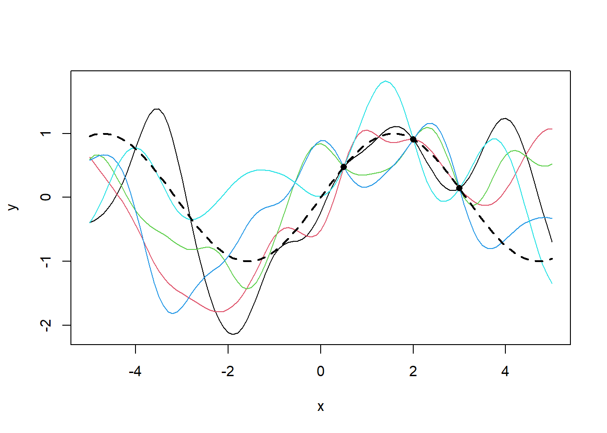
It can be seen that the presence of data squishes all three functions to a single point.The variance across the three functions goes to 0 at these points and increases with distance from these points.
Conclusion
Gaussian Processes provide an interesting alternative to generalized linear models. It comes with a minimal set of assumptions and provides a quantitative estimate of uncertainty in predictions. This also makes it applicable in areas like active learning.
Gaussian Process are very computationally intensive and it’s application to large data sets have therefore been limited. Research in Gaussian Processes have been focused on making these computations more tractable.
References and Additional Resources
Almost all the content in this write up comes from Nando de Freitas’ UBC lecture
A second lecture I referenced is available here
GPyTorch: An open source project leveraging GPs for machine learning using PyTorch.
kernlab: A package in R for Kernel Methods
A high quality intro to GPs from distill.pub
Largely the same content in python